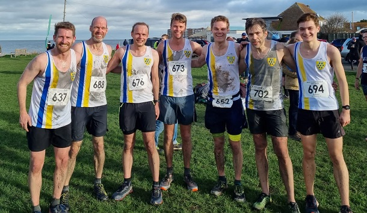
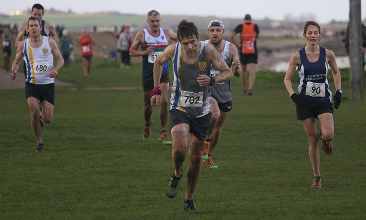
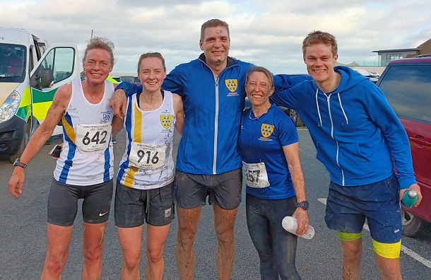

Sevenoaks AC women retained their lead in the Kent Fitness League after the fourth match at Minnis Bay on 2nd January.
The cross-country course at Minnis Bay is unique, adds Jim Knight. Runners start at the end of Marine Parade and follow the coastal footpath towards Reculver Towers. After 3 miles, they turn inland, across the fields, over the railway embankment and then they have to jump over five deep mud-filled dykes before returning to the embankment for the final two miles to the finish. The dykes get progressively deeper and wider. The first is jumpable, but the 3rd is virtually impossible to cross without falling into waist-deep mud. A real cross-country course.
27 Sevenoaks AC athletes joined the 467 runners taking part in the race. By the finish their pristine white SAC vests were various shades of grey and brown.
The SAC women’s team ran well and were just beaten into second place by Canterbury Harriers. With two wins each, Sevenoaks and Canterbury have the same score in the series, but on count-back Sevenoaks retained their lead. The next two races, at Rough Common, Canterbury and Knole Park, Sevenoaks will be crucial in deciding the series winner. The SAC scorers on the day were Bridgit Weekes, Cath Linney, Suzy Claridge and Hannah Sangham with the rest of the team also running brilliantly over the soaking course.

Meanwhile, Jamie Philip was third overall, and first veteran, in his first appearance in the league. Along with fellow-scorers James Graham, Jonathan Marsh, Andy Evans, Mike Lochead, Ed Saunders, Richard Alford-Smith and Harvey Taylor, Jamie led the SAC men to seventh place on the day, but fifth after four races.

All this meant that Sevenoaks AC's combined team were fifth on the day and stay fifth in the standings. The SAC results were:
| Ov Pos | Lg Pos | Bib | Runner | Age | Time | Club | Score | Rtg | # |
|---|---|---|---|---|---|---|---|---|---|
| 3 | 3 | 1062 | Jamie Philip | 44 | 36:53 | Sevenoaks AC | V40:1 | 99.33 | Debut |
| 15 | 15 | 688 | Edmund Saunders | 39 | 38:08 | Sevenoaks AC | M1 | 95.29 | 15 |
| 30 | 30 | 673 | Michael Lochead | 41 | 40:09 | Sevenoaks AC | V40:2 | 90.24 | 15 |
| 50 | 48 | 637 | Richard Alford-Smith | 45 | 41:39 | Sevenoaks AC | M2 | 84.18 | 8 |
| 61 | 58 | 694 | Harvey Taylor | 17 | 42:08 | Sevenoaks AC | M3 | 80.81 | 4 |
| 68 | 65 | 652 | Chris Fenn | 30 | 42:29 | Sevenoaks AC | NSBLS | 78.45 | 4 |
| 75 | 72 | 676 | Andrew Milne | 39 | 42:49 | Sevenoaks AC | NSBLS | 76.09 | 31 |
| 79 | 76 | 702 | Daniel Witt | 46 | 43:06 | Sevenoaks AC | NSBLS | 74.75 | 61 |
| 81 | 77 | 680 | Sebastian Naughton | 47 | 43:08 | Sevenoaks AC | NSBLS | 74.41 | 3 |
| 95 | 90 | 678 | Shaun Mullen | 45 | 44:19 | Sevenoaks AC | NSBLS | 70.03 | 6 |
| 116 | 9 | 672 | Catherine Linney | 52 | 45:40 | Sevenoaks AC | V45 | 95.29 | 38 |
| 124 | 114 | 703 | Tim Young | 49 | 46:00 | Sevenoaks AC | NSBLS | 61.95 | 4 |
| 128 | 118 | 679 | James Nash | 30 | 46:10 | Sevenoaks AC | NSBLS | 60.61 | 8 |
| 134 | 11 | 642 | Suzy Claridge | 49 | 46:18 | Sevenoaks AC | V35 | 94.12 | 8 |
| 137 | 12 | 916 | Hannah Sangan | 27 | 46:35 | Sevenoaks AC | F1 | 93.53 | 2 |
| 147 | 15 | 657 | Vanessa Gilmartin | 46 | 47:09 | Sevenoaks AC | NSBLS | 91.76 | 20 |
| 156 | 138 | 650 | Graham Dwyer | 49 | 47:44 | Sevenoaks AC | NSBLS | 53.87 | 14 |
| 160 | 20 | 647 | Julia Davis | 24 | 47:56 | Sevenoaks AC | NSBLS | 88.82 | 4 |
| 175 | 151 | 669 | Leonard Lai King | 42 | 48:42 | Sevenoaks AC | NSBLS | 49.49 | 4 |
| 180 | 155 | 659 | James Graham | 68 | 48:57 | Sevenoaks AC | V60 | 48.15 | 25 |
| 192 | 163 | 1059 | Jonathan Marsh | 61 | 49:34 | Sevenoaks AC | V50:1 | 45.45 | Debut |
| 196 | 166 | 651 | Andrew Evans | 51 | 49:41 | Sevenoaks AC | V50:2 | 44.44 | 48 |
| 219 | 35 | 699 | Bridgit Weekes | 63 | 50:49 | Sevenoaks AC | V55 | 80.00 | 14 |
| 301 | 71 | 685 | Ella Pyman | 55 | 55:48 | Sevenoaks AC | NS | 58.82 | 16 |
| 333 | 252 | 701 | Jeremy Winter | 68 | 57:37 | Sevenoaks AC | NS | 15.49 | 5 |
| 337 | 84 | 704 | Samantha Znetyniak | 46 | 57:51 | Sevenoaks AC | NS | 51.18 | 6 |
| 349 | 90 | 1000 | Sarah Fisher | 25 | 58:34 | Sevenoaks AC | NS | 47.65 | 5 |
The full results are here.

The next (fifth) match is at Blean Woods, Rough Common on 6th February.